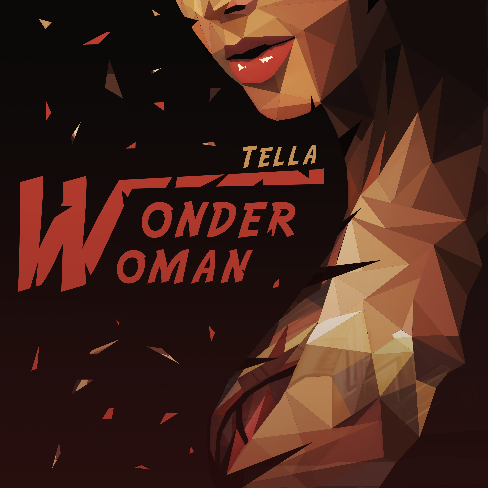
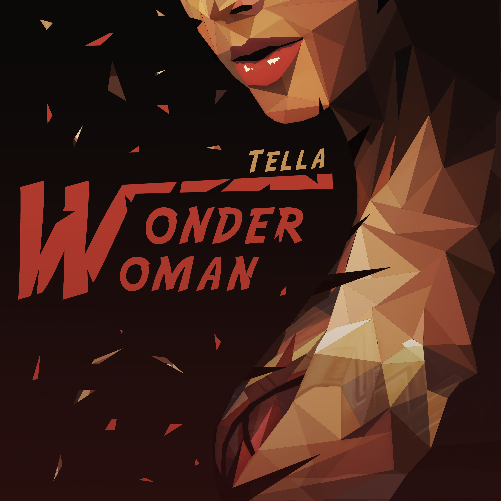

My Graphic Design
Het maken van Artwork is één van mijn favoriete bezigheden. Dit omdat ja van zoveel ellementen inspiratie krijgt. Het lied, een bepaalde lyric of de artiest zelf. Bij dit artwork wou de artiest het vrij letterlijk.
Daarom heb ik Wonder Woman gemaakt maar in LowPoly.
 
Het leuke aan een logo vind ik dat je outside the box moet denken. Sommigen hebben een volledige naam anderen gebruiken vormen.
Dit logo is gemaakt voor 'Mavu'. Zoals u ziet zitten de letters er wel letterlijk in maar ze worden creatief geplaatst.


Bij deze vorm van werken komt er heel veel kijken. Ik vind dit dan ook een van de moeilijkste. Zeker als je iets 'realistisch' wilt 'schilderen' moet je kijken dat je proporties, kleuren, schaduwen,... ook echt kloppen. Maar het resultaat dat je verkrijgt na het lange werk is het zeker waard!

Lowpoly is het maken van vormen, afbeeldingen,.. door enkel driehoeken te gebruiken. Door deze juist te positioneren en kleuren te geven krijg je een mooi geheel.

E-mailadres: lau_jeb@hotmail.com
Merch-Online shop: https://www.mijnwebwinkel.nl/winkel/lau-d/
Student at CVO Horito Turnhout.